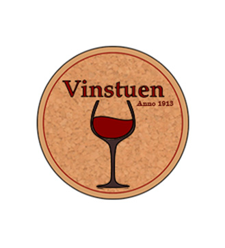
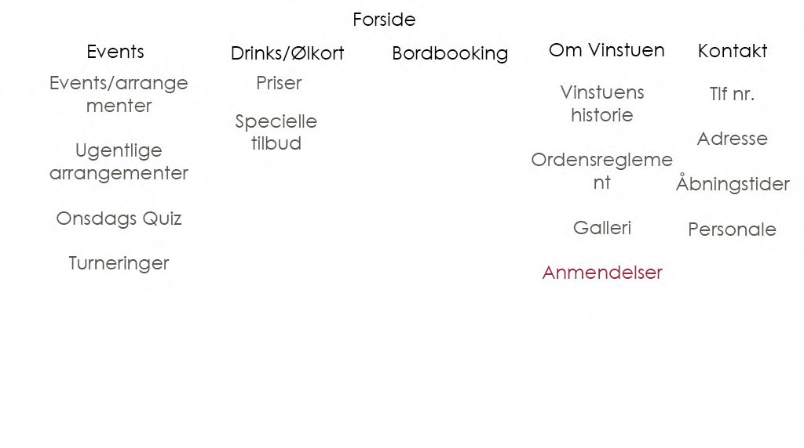
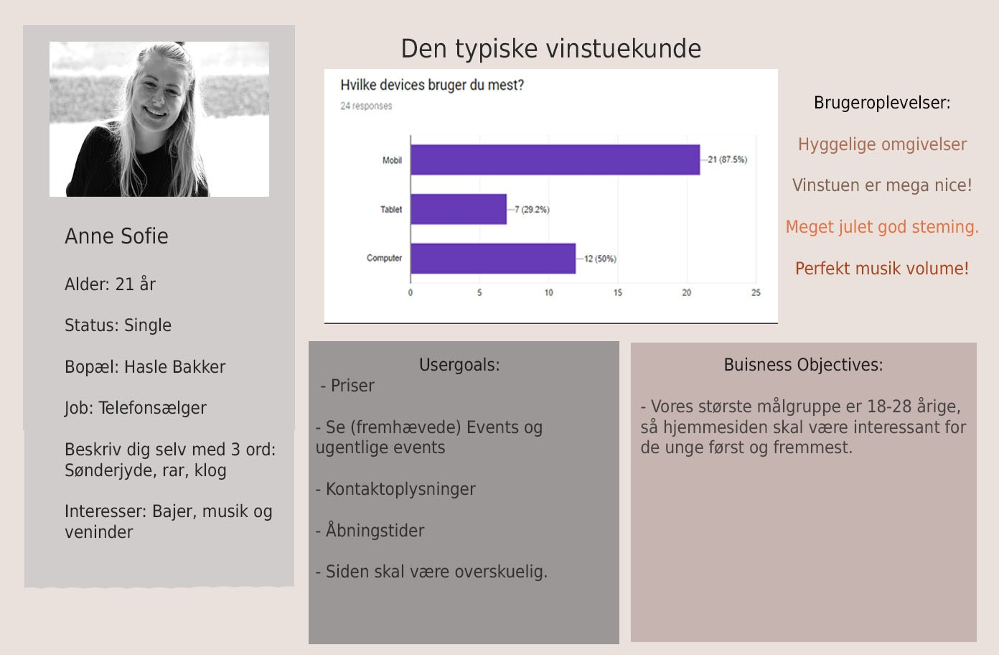

I vores Case 3 , fik vi til opgave at skabe et website ved brug af Mobile First paradigmet og Responsive webdesign. Derudover skulle vi ud og finde en rigtig kunde selv, hvor vi skulle lave en brugeranalyser, som kunne hjælpe os med at finde ud af hvad det bedste design ville være. Min gruppe valgte at kontakte ´Vinstuen ´, et værtshus i Århus.
Omvendt Process Faktisk så skulle hele vores process have været lavet omvendt, således at vores design tog udgangs punkt i vores personas og IA/kortsorteringer, men vi havde først aftalt interview med vores kunde og hans kunder senere hen i processen, så vi gjorde det hele lidt anderledes end de andre grupper.

Vinstuen har i forvejen et ordlogo, (som set på forsiden af rapporten), så vi har forsøgt at arbejde med samme typografi, men vi har primært arbejdet ud fra at deres logo skulle indeholde vin,vinglas eller vinpropper. Vi lavede flere skitser, men endte med at bruge dette emblemlogo, vi lavede det ved hjælp af illustrator og photoshop.

Vi måtte lave vores Informations arkitekturs proces, en smule anderledes end de andre. Da vi på dette tidspunkt stadig manglede vores interviews. Derfor valgte vi i stedtet for at se på interviews og usergoals, at kigge på forskellige bar-hjemmesider, for at finde ud af hvad de havde af indhold. Her kiggede vi på The old Irish pub, DT bar og Barry´s pub.
Efter denne research, skulle vi så lave en brainstorm over alt vi kunne komme på af indhold til vores website.
Herefter klippede vi alt fra brainstormen ud, således at vi kunne komme i gang med vores kortsorteringer.
Vi fik 3 grupper i vores klasse til at lægge forskellige kortsorteringer, men endte i sidste ende med at vælge som stående på billedet ovenfor.

Da vi endelig fik lov til at inteviewe vores kunde og hans kunder, kunne vi lave bruger test og en ny og forbedret persona.
Her tog vi ned på vinstuen, på en tablet havde vi lavet en brugertest, hvor vi gik rundt og spurgte folk om de ville deltage. vi brugte google til at lave denne
derudover så tilbød vi folk en øl , for at gå med op til vores bord og deltage i mere dybdegående interviews til vores persona.
Der var ca. 12 der deltog i de fordybende interviews, og vi kunne så lave vores nye persona, hvor vi udvalgte en person som lignede de andres svar best muligt. Derudover valgte vi at lave typen ´Den typiske vinstuekunde´.